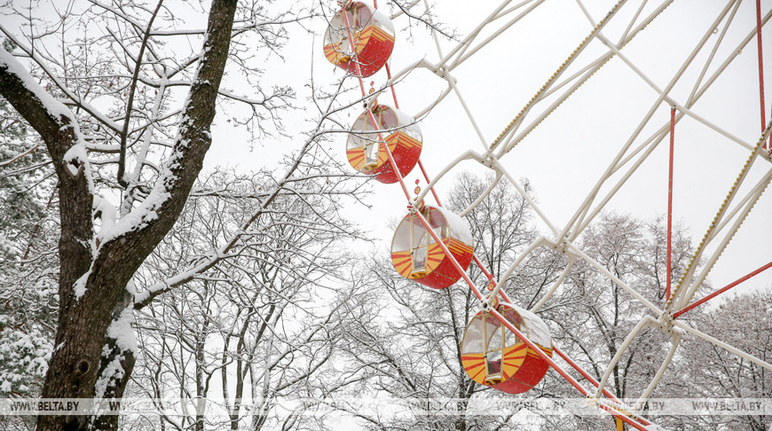
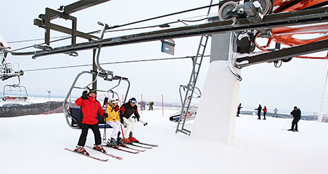
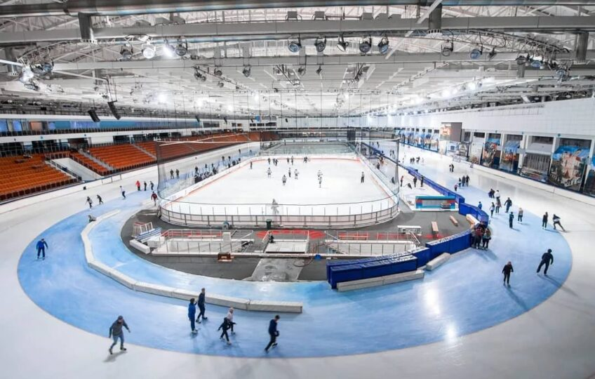

Интерактивная программа "Лукоморье" - популярный у молодежи квест, где гостей встречает и знакомит со своим царством Зимушка-зима.
"Наш сказочный персонаж предлагает разгадать загадки, поучаствовать в различных активностях. В таком режиме будем работать до 25 декабря. А 22 декабря намечается еще одно интересное событие - в свою столичную резиденцию прибудет Дед Мороз. Добрый волшебник с верными помощниками будет принимать посетителей ежедневно до 7 января с 10.30 до 18.30. Рекомендуем к нему записаться заранее", - рассказала начальник сектора культурно-массовой и спортивной работы управления Лидия Вежновец.
По традиции дедушка поинтересуется, как прошел уходящий год, поздравит с наступающим, предложит игры и загадки, с удовольствием выслушает стихотворения и песни. На сказочной избушке будет висеть почтовый ящик, в него можно опустить письма с пожеланиями.
"Каждый, кто придет к нашему Дедушке Морозу, получит сладкий подарок", - отметила Лидия Вежновец.

Горнолыжный отдых в Беларуси с каждым годом становится все более популярным. В нашей стране нет горных массивов, но есть высокие холмы и крутые овраги, склоны которых прекрасно подходят для горнолыжного спорта и сноубординга. В Беларусь любителей активного отдыха привлекают умеренно мягкий климат снежных зим, отсутствие опасности схода лавин, оборудованные на высочайшем уровне трассы, а также близость горнолыжных склонов к комфортабельным гостиницам, ресторанам и пунктам проката снаряжения.
Когда: с декабря по март
Где: Логойский район
Стоимость: прокат лыжного снаряжения для детей до 12 лет – от 6 белорусских рублей в час, для взрослых – от 9 рублей в час; 1 подъем – 5 рублей для детей, 10 рублей для взрослых.

Одним из самых популярных зимних развлечений в Минске является катание на коньках. Город предлагает несколько катков, доступных для любителей активного отдыха. Вот некоторые из них:
Адрес: Площадь Октябрьская, дом 1
Время работы: С 10:00 до 22:00
Цена: Бесплатно.
Особенности: Открытый каток расположен в центре Минска на главной площади столицы. Заточка коньков,
кафе с горячими напитками, прокат коньков, массовые катания, музыкальное сопровождение.
Адрес: просп. Независимости, дом 116
Время работы: Пн. — пт. с 12:00 до 22:00, сб. — вс. с 10:00 до 22:00.
Цена: Бесплатно.
Особенности: Открытый каток расположен возле Национальной библиотеки, заточка коньков, кафе с горячими напитками, прокат коньков, массовые катания.
Адрес: ТРЦ «Корона»
Время работы: Вс - Чт: 10:00 – 23:00.
Цена: От 7 рублей.
Особенности: Это отличный крытый каток для тех, кто хочет насладиться катанием, не зависимо от погодных условий.
Здесь также предоставляется прокат коньков и инструктаж для начинающих.